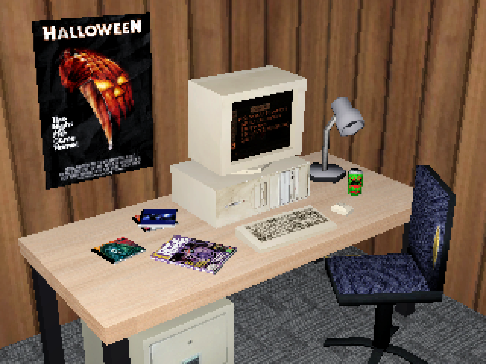

01. HOME — selected works → 02. ABOUT — more info → 03. RESOURCES — free downloads → 04. TWITTER — hot takes → 05. DRIBBBLE — more design → 06. LINKEDIN — business time →
I’ve been learning how to make low-poly 3D models in Blender. Attempting to evoke the low-resolution era of the PS1. Here are a few objects I've made. See them as intended — with heavy dithering and vertex wobble — on Twitter!
FOLLOW ON TWITTER →

Taco Bell by mattcolewilson on Sketchfab